import numpy as np # бібліотека для роботи з масивами чисел
import matplotlib.pyplot as plt # бібліотека для побудови графіків
import yfinance as yf # бібліотека для зчитування фінансових даних з Yahoo Finance
import levy # бібліотека для роботи з альфа-стабільним розподілом Леві
import pandas as pd # бібліотека для фільтрації даних та їх обробки
from scipy.stats import norm # бібліотека для побудови теоретичного Гауссового розподілу
from tqdm import tqdm # бібліотека для виводу шкали завантаження9 Лабораторна робота № 12
Тема. Аналіз кризових подій із використання Леві альфа-стабільного розподілу
Мета. Навчитися використовувати розподіл Леві для диференціації флуктуацій, що виходять за межі нормального розподілу
9.1 Теоретичні відомості
Альфа-стабільний розподіл є узагальненням розподілу Гауса, яке цінується за те, що воно тягне за собою жирні хвости. З цієї причини він широко використовується при обробці сигналів, наприклад, у медицині чи фінансах.
Загальний клас стабільних розподілів був введений і отримав цю назву французьким математиком Полем Леві на початку 1920-х років.
Раніше ця тема привертала лише помірну увагу провідних експертів, хоча були і ентузіасти, з яких можна згадати російського математика Олександра Яковича Хінчіна. Натхненням для Леві стало бажання узагальнити відому центральну граничну теорему, згідно з якою будь-який розподіл ймовірностей з кінцевою дисперсією збігається до гауссового розподілу.
Стабільні розподіли мають три виняткові властивості, які можна коротко підсумувати, заявляючи, що вони 1) інваріантні при додаванні, 2) мають власну область збіжності і 3) дозволяють канонічну форму характеристичної функції.
Інваріантність при додавані
Випадкова величина \(X\) підпорядковується стабільному розподілу \(P(x) = \text{Prob}\{X \leq x\}\) якщо для будь-якого \(n \geq 2\) існують додатнє значення \(c_{n}\) та дійсне значення \(d_{n}\) такі, що
\[ X_1 + X_2 + ... + X_n \stackrel{d}{=} c_{n}X + d_{n}, \]
де \(X_1, X_2, ..., X_n\) характеризуються як незалежні, ідентично розподілені випадкові величини. Також \(\stackrel{d}{=}\) позначає рівність розподілів, тобто, випадкові величини з обох сторін мають однаковий розподіл ймовірностей.
Загалом, сума незалежних, ідентично розподілених випадкових величин результує у випадкову величину з іншим розподілом. Однак, для випадкових величин, що характеризуються стабільним розподілом, сума ідентично розподілених випадкових величин до величини такого самого розподілу. У цьому випадку результуюча випадкова величина (розподіл) може відрізнятися від попередніх величин характерним масштабом (\(c_{n}\)) та зміщенням (\(d_{n}\)). Якщо \(d_{n} = 0\), розподіл називається строго стабільним.
Відомо, що нормована константа \(c_{n}\) має вид
\[ c_{n} = n^{1/\alpha} \, \text{with} \, 0 < \alpha \leq 2. \]
Параметр \(\alpha\) має назву характеристична експонента або індекс стабільності стабільного розподілу.
Попередня теорема має альтернативну версію, що включає в суму лише дві випадкові величини. Випадкова величина \(X\) підпорядковується стабільному розподілу, якщо для будь-яких позитивних значень \(A\) та \(B\) існує позитивне число \(C\) та дійсне число \(D\) такі, що
\[ A X_1 + B X_2 \stackrel{d}{=} C X + D, \]
де \(X_1\) та \(X_2\) незалежні копії \(X\). Тоді існує значення \(\alpha \in (0, 2]\) при яких значення \(C\) задовільняє рівність \(C^{\alpha} = A^{\alpha} + B^{\alpha}\).
Для строго стабільних розподілів \(D = 0\). Це означає, що всі лінійні комбінації випадкових незалежних, ідентично розподілених випадкових величин, що підкоряються строго стабільному розподілу, результують у випадкову величину з одним і тим же типом розподілу.
Стабільний розподіл вважається симетричним, якщо випадкова величина \(-X\) має такий самий тип розподілу. Симетричний стабільний розподіл обов’язково строго стабільний.
Оскільки аналітичний вираз функції щільності ймовірностей для стабільного розподілу невідома, за винятком кількох членів стабільного сімейства, більшість традиційних методів математичної статистики не можуть бути використані. Відбовідними вийнятками є
- Гаусовий розподіл \(S_2(0,\mu, \sigma) = \mathcal{N}(\mu, 2\sigma^2)\). Гаусовий розподіл є спеціальним випадком стабільного розподілу при \(\alpha = 2\) так що \(\mathcal{N}(\mu, \sigma) = S(2,0,\mu, \frac{\sigma}{\sqrt{2}})\), де \(\mu\) позначає середнє значення нормального розподілу, а \(\sigma\) — це стандартне відхилення. Функція щільності ймовірностей має вид
\[ \frac{1}{\sigma\sqrt{2\pi}}\text{exp}^{-(x-\mu)^{2}/2\sigma^{2}}. \]
- Розподіл Коші. Розподіл Коші — це ще одне представлення стабільного розподілу при \(\alpha = 1\) та \(\beta = 0\) такими, що \(Cauchy(\delta, \gamma) = S_1(1,0,\gamma,\delta)\), де \(\gamma\) — це параметр масштабування, а \(\delta\) — це параметр зсуву розподілу Коші. Функція щільності ймовірностей представлена як:
\[ \frac{\gamma}{\pi((x-\delta)^2 + \gamma^2)}, \, -\infty < x < \infty. \]
- Розподіл Леві також є вийнятком із класу стабільних розподілів, де \(\alpha = 0.5\) і \(\beta = 1\). Іншими словами, \(Levy(\delta, \gamma) = S_{1/2}(0.5, 1, \gamma, \delta)\). Функція щільності ймовірностей має вид
\[ \sqrt{\frac{\gamma}{2\pi}}\frac{1}{(x-\delta)^{3/2}}\exp{\left[ \frac{-\gamma}{2(x-\delta} \right]}, \, \delta < x < \infty. \]
Якщо \(X \sim S_{1/2}(0.5, 1, \gamma, \delta\), тоді для \(x > 0\)
\[ P(X \leq x) = 2 \left( 1 - \phi \left( \sqrt{\frac{\gamma}{x}} \right) \right), \]
де \(\phi\) позначає кумулятивну функцію нормального розподілу.
Область збіжності
Інше (еквівалентне) визначення стверджує, що стабільні розподіли — це єдині розподіли, які можна отримати при границі нормалізованих сум незалежних, ідентично розподілених випадкових величин. Кажуть, що випадкова величина \(X\) має область збіжності, тобто якщо існує послідовність незалежних, ідентично розподілених випадкових величин \(Y_1, Y_2, ...\) і послідовності позитивних чисел \({\gamma_n}\) і дійсних чисел \({\delta_n}\) таких, що
\[ \frac{Y_1 + Y_2 + ... + Y_n}{\gamma_n} + \delta_n \stackrel{d}{\Rightarrow} X. \]
Коли \(X\) це гаусова випадкова величина, а \(Y_i's\) є незалежними, ідентично розподіленими випадковими величинами з визначенною дисперсією, тоді рівняння вище є твердженням звичайної центральної граничної теореми. Область збіжності \(X\) вважається нормальною коли \(\gamma_n = n^{1/\alpha}\).
Канонічні представлення характеристичної функції
Чотири параметри використовуються для опису випадкової величини, що слідує за стабільним розподілом: \(X \sim S(\alpha, \beta, \mu, \gamma)\). Параметр \(\alpha \in (0, 2]\) — це той, який нас найбільше зацікавить. Цей параметр визначає товщину хвостів. Параметр \(\beta \in [-1, 1]\) є параметром асиметрії. Останні два параметри позначають розташування \((\mu \in \Re)\) і масштаб \((\gamma > 0)\) розподілу. Альфа-стабільний розподіл немає жодного аналітичного виразу для щільності ймовірності \(X\), але ми можемо охарактеризувати його характеристичною функцією:
\[\begin{equation} \begin{split} \phi(t) &= E\left[\exp(itX)\right] \\ &= \begin{cases} \exp\left(i \mu t - \gamma^{\alpha}|t|^{\alpha} \left[1-i\beta\text{sign}(t)\tan{\frac{\pi\alpha}{2}}\right]\right) & \text{if} \, \alpha \neq 1 \\ \exp\left(i \mu t - \gamma|t| \left[1+i\beta\text{sign}(t)\frac{2}{\pi}\log{|t|}\right]\right) & \text{if} \, \alpha = 1. \end{cases} \end{split} \end{equation}\]
Ми могли б використовувати перетворення Фур’є, щоб отримати функцію щільності розподілу ймовірностей з характеристичної функції:
\[ f(x) = \frac{1}{2\pi}\int_{-\infty}^{+\infty} \phi(t) \cdot \exp(-itX) dt. \]
Але наведена вище параметризація не є повністю задовільною, оскільки функція щільності розподілу ймовірностей не є безперервною, зокрема, при \(\alpha = 1\). Дійсно, коли \(\beta > 0\), щільність розподілу зміщується вправо, коли \(\alpha < 1\) і вліво, коли \(\alpha > 1\), зі зсувом в сторону \(+\infty\) (відповідно \(-\infty\)), коли \(\alpha\) прагне до 1. Таким чином, для прикладного аналізу даних та інтерпретації коефіцієнтів слід уникати такої параметризації.
Існує багато параметризацій для стабільних законів, і ці різні параметризації викликали велику плутанину. Різноманітність параметризацій обумовлена поєднанням історичної еволюції плюс численними проблемами, які були проаналізовані за допомогою спеціалізованих форм стабільного розподілу. Є вагомі причини використовувати різні параметризації в різних ситуаціях. Якщо в пріорітеті чисельні розрахунки, робота із даними, то краще використовувати одну параметризацію. Якщо бажані прості алгебраїчні властивості розподілу або аналітичні властивості строго стійких законів, то краще розглянути декілька параметризацій. Нолан запропонував використовувати параметризацію Золотарьова (M), яку також часто позначають як \(S^{0}\). Характеристична функція, що відповідає \(X \sim S^{0}(\alpha, \beta, \mu_{0}, \gamma)\), дорівнює:
\[\begin{equation} \begin{split} \phi(t) &= E\left[\exp(itX)\right] \\ &= \begin{cases} \exp\left(i \mu_{0} t - \gamma^{\alpha}|t|^{\alpha} \left[1+i\beta\text{sign}(t)\tan{\frac{\pi\alpha}{2}}\left( \gamma^{1-\alpha}|t|^{1-\alpha}-1 \right)\right]\right) & \text{if} \, \alpha \neq 1 \\ \exp\left(i \mu_{0} t - \gamma|t| \left[1+i\beta\text{sign}(t)\frac{2}{\pi}\left(\log{|t|} + \log{\gamma}\right) \right]\right) & \text{if} \, \alpha = 1. \end{cases} \end{split} \end{equation}\]
Ця альтернативна параметризація недалека від зазначеної напочатку. Єдина відмінність стосується параметра \(\mu\), який у даній параметризації коригує зсув для значень \(\alpha\) близьких до 1:
\[ \mu_{0} = \begin{cases} \mu + \beta\gamma\tan{\frac{\pi\alpha}{2}} & \text{if} \, \alpha \neq 1 \\ \mu + \beta\frac{2}{\pi}\gamma\log{\gamma} & \text{if} \, \alpha = 1. \end{cases} \]
9.2 Метод розрахунку параметрів \(\alpha\)-стабільного розподілу
Чисельні методи, такі як метод Маккаллоха, заснований на квантилях, і метод оцінки максимальної правдоподібності були розроблені в результаті відсутності аналітичних рішень. Припустимо, що \(\text{X} = (X_1, ... , X_T)\) вектор, що складається з \(T\) незалежних ідентично розподілених випадкових величин із розподілу Парето, і також \(x \sim S_{\alpha}(\alpha, \beta, \delta, \gamma)\). Визначивши \(\theta = (\alpha, \beta, \delta, \gamma)\), Митник, Доганоглу та Ченайо розробили алогритм максимальної правдоподібності і показали, що \(\theta\) можна розрахувати, максимізуючи функцію логарифмічної правдоподібності
\[ l(\theta, x) = \sum_{i=1}^{T}\log{f(x_{i}, \theta)}. \]
Дюмушель застосував метод максимальної правдоподібності до стабільного розподілу і визначив функцію правдоподібності наступним чином:
\[ L(\theta) = \prod_{k=1}^{n}S_{\alpha,\beta} \left( \frac{X_{k} - \delta}{\gamma} \right) \Big/ \gamma, \]
де \(\theta = (\alpha, \beta, \delta, \gamma)\) опираючись на \(x = (x_1, ... , x_n)\) для розміру вибірки \(n\).
9.3 Хід роботи
9.3.1 Імпортування необхідних бібліотек
9.3.2 Визначення стилю рисунків
plt.style.use(['science', 'notebook', 'grid']) # стиль, що використовуватиметься
# для виведення рисунків
params = {
'figure.figsize': (8, 6), # встановлюємо ширину та висоту рисунків за замовчуванням
'font.size': 22, # розмір фонтів рисунку
'lines.linewidth': 2, # товщина ліній
'axes.titlesize': 'small', # розмір титулки над рисунком
"font.family": "sans-serif", # сімейство стилів підписів
"font.serif": ["Times"], # стиль підпису
'savefig.dpi': 300 # якість збережених зображень
}
plt.rcParams.update(params) # оновлення стилю згідно налаштувань9.3.3 Зчитування з Yahoo Finance
# встановлення назви індексу
symbol = "^BSESN"
# встановлення діапазону з яким будемо працювати
start = "1980-01-01"
end = "2022-11-07"
# завантаження даних з Yahoo
data = yf.download(symbol, start, end)
time_ser = data['Adj Close'].copy()
# підпис по вісі Ох
xlabel = 'time, days'
# підпис по вісі Оу
ylabel = symbol
# збереження результату в текстовий документ
np.savetxt(f'{symbol}_initial_time_series.txt', time_ser_1.values)[*********************100%%**********************] 1 of 1 completed9.3.4 Виведення графіку досліджуваного ряду
time_ser.plot(figsize=(8,6), xlabel=xlabel, ylabel=fr"{symbol}")
plt.savefig('ts1.jpg', bbox_inches="tight")
plt.show();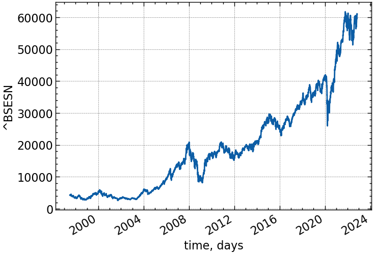
9.3.5 Побудова розподілу Леві та розрахунок параметрів для всього ряду
for_levy = time_ser.copy()
if ret_type == 1:
pass
elif ret_type == 2:
for_levy = for_levy.diff()
elif ret_type == 3:
for_levy = for_levy.pct_change()
elif ret_type == 4:
for_levy = for_levy.pct_change()
for_levy -= for_levy.mean()
for_levy /= for_levy.std()
elif ret_type == 5:
for_levy = for_levy.pct_change()
for_levy -= for_levy.mean()
for_levy /= for_levy.std()
for_levy = for_levy.abs()
elif ret_type == 6:
for_levy -= for_levy.mean()
for_levy /= for_levy.std()
for_levy = for_levy.dropna().values9.3.6 Підганяємо розподіл Леві та Гаусовий для порівняння
params = levy.fit_levy(for_levy)
mean, std = norm.fit(for_levy)9.3.7 Отримуємо параметри розподілу Леві у відповідності до однієї із параметризацій, що пропонує пакет \(levy\)
alpha, beta, mu, sigma = params[0].get('1')9.3.8 Будуємо теоретичні та емпіричні розподіли
fig, ax = plt.subplots(1, 2, figsize=(20, 10))
ax[0].hist(for_levy, bins=50, density=True, alpha=0.6, color='b')
xmin = for_levy.min()
xmax = for_levy.max()
x = np.linspace(xmin, xmax, len(for_levy))
pdf = levy.levy(x, alpha, beta, mu, sigma)
pdf_norm = norm.pdf(x, mean, std)
fig.suptitle(fr'Теоретичні та емпіричні $\alpha$-стабільні розподіли для {symbol}', fontsize=20)
ax[0].plot(x, pdf, 'k', linewidth=2)
ax[0].plot(x, pdf_norm, 'r', linewidth=2)
ax[0].set_yscale('log')
ax[0].set_xlabel(r'$ x $')
ax[0].set_ylabel(r'$ f_{\alpha}(x), \, \mathrm{ePDF}$')
ax[1].hist(for_levy, bins=50, density=True, alpha=0.6, color='g')
ax[1].plot(x, pdf, 'k', linewidth=2)
ax[1].plot(x, pdf_norm, 'r', linewidth=2)
ax[1].set_xlabel(r'$ x $')
ax[1].set_ylabel(r'$ f_{\alpha}(x), \, \mathrm{ePDF}$')
plt.show();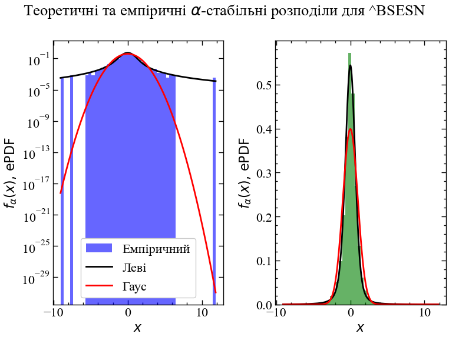
9.3.9 Виводимо параметри розподілу Леві для заданого індексу
print(fr"Параматери alpha = {alpha:.2f}, beta = {beta:.2f}, mu = {mu:.2f}, sigma = {sigma:.2f}")Параматери alpha = 1.63, beta = -0.11, mu = -0.01, sigma = 0.53Для досліджуваного індексу бачимо, що параметр $ < 2.0 $ та $ < 0 $, що вказує на відхилення розподілу даного індексу від нормального. Тобто, для даного ряду переважаючими є кризові явища, на що вказують важкі хвости розподілу. Із порівняльного аналізу Гауссового та Леві розподілів бачимо, що хвости нормального розподілу значно недооцінюють ймовірність появи кризових явищ чого, наприклад, не скажешь про альфа-стабільний розподіл. Взявши логарифм значень ймовірності по осі $ Oy $ ми можемо спостерігати, що, наприклад, недооцінка негативних прибутковостей Гауссовим розподілом, у порівнянні з альфа-стабільним, складає $ ^{15} $ порядків. Для позитивних прибутковостей, що перевищують значення $ +10$ недооцінка Гауссовим розподілом складає $ ^{27} $ порядків. Теоретичне значення альфа-стабільного розподілу достатньо точно враховує важкі хвости емпіричного розподілу, що також виражається високим ексцесом розподілу. Також варто зазначити, що коефіцієнт асиметрії $ $ вказує на невеличке зміщення розподілу в ліву сторону, що також демонструє переважання кризових явищ.
9.3.10 Дослідження поведінки альфа-стабільного розподілу Леві
x = np.arange(-5, 5, .01)
beta_1 = 0
mu = 0
sigm = 1
beta_2 = 1.0
fig, ax = plt.subplots(2, 2, figsize=(20, 10))
ax[0][0].plot(x, levy.levy(x, 0.5, beta_1, mu, sigm), label = r"$ \alpha=0.5 $")
ax[0][0].plot(x, levy.levy(x, 0.75, beta_1, mu, sigm), label = r"$ \alpha=0.75 $")
ax[0][0].plot(x, levy.levy(x, 1.0, beta_1, mu, sigm), label = r"$ \alpha=1.0 $")
ax[0][0].plot(x, levy.levy(x, 1.25, beta_1, mu, sigm), label = r"$ \alpha=1.25 $")
ax[0][0].plot(x, levy.levy(x, 1.5, beta_1, mu, sigm), label = r"$ \alpha=1.5 $")
ax[0][0].set_title(r"Симетричні $\alpha$-стабільні розподіли, $ \beta = 0 $, $ \mu = 0 $, $ \sigma = 1 $", y=1.03, fontsize=20)
ax[0][0].legend(fontsize=20)
ax[0][0].set_xlabel(r"$ x $")
ax[0][0].set_ylabel(r"$ f_{\alpha}(x) $")
ax[0][1].plot(x, levy.levy(x, 0.5, beta_2, mu, sigm), label = r"$ \alpha=0.5 $")
ax[0][1].plot(x, levy.levy(x, 0.75, beta_2, mu, sigm), label = r"$ \alpha=0.75 $")
ax[0][1].plot(x, levy.levy(x, 1.0, beta_2, mu, sigm), label = r"$ \alpha=1.0 $")
ax[0][1].plot(x, levy.levy(x, 1.25, beta_2, mu, sigm), label = r"$ \alpha=1.25 $")
ax[0][1].plot(x, levy.levy(x, 1.5, beta_2, mu, sigm), label = r"$ \alpha=1.5 $")
ax[0][1].set_title(r"Зміщенні $\alpha$-стабільні розподіли, $ \beta = 1 $, $ \mu = 0 $, $ \sigma = 1 $", y=1.03, fontsize=20)
ax[0][1].legend(fontsize=20)
ax[0][1].set_xlabel(r"$ x $")
ax[0][1].set_ylabel(r"$ f_{\alpha}(x) $")
ax[1][0].plot(x, levy.levy(x, 0.5, beta_1, mu, sigm, cdf=True), label = r"$ \alpha=0.5 $")
ax[1][0].plot(x, levy.levy(x, 0.75, beta_1, mu, sigm, cdf=True), label = r"$ \alpha=0.75 $")
ax[1][0].plot(x, levy.levy(x, 1.0, beta_1, mu, sigm, cdf=True), label = r"$ \alpha=1.0 $")
ax[1][0].plot(x, levy.levy(x, 1.25, beta_1, mu, sigm, cdf=True), label = r"$ \alpha=1.25 $")
ax[1][0].plot(x, levy.levy(x, 1.5, beta_1, mu, sigm, cdf=True), label = r"$ \alpha=1.5 $")
ax[1][0].set_title(r"Симетричні $\alpha$-стабільні розподіли, $ \beta = 0 $, $ \mu = 0 $, $ \sigma = 1 $", y=1.03, fontsize=20)
ax[1][0].legend(fontsize=20, loc="lower right")
ax[1][0].set_xlabel(r"$ x $")
ax[1][0].set_ylabel(r"$ F_{\alpha}(x) $")
ax[1][1].plot(x, levy.levy(x, 0.5, beta_2, mu, sigm, cdf=True), label = r"$ \alpha=0.5 $")
ax[1][1].plot(x, levy.levy(x, 0.75, beta_2, mu, sigm, cdf=True), label = r"$ \alpha=0.75 $")
ax[1][1].plot(x, levy.levy(x, 1.0, beta_2, mu, sigm, cdf=True), label = r"$ \alpha=1.0 $")
ax[1][1].plot(x, levy.levy(x, 1.25, beta_2, mu, sigm, cdf=True), label = r"$ \alpha=1.25 $")
ax[1][1].plot(x, levy.levy(x, 1.5, beta_2, mu, sigm, cdf=True), label = r"$ \alpha=1.5 $")
ax[1][1].set_title(r"Зміщенні $\alpha$-стабільні розподіли, $\beta = 1$, $\mu = 0$, $\sigma = 1$", y=1.03, fontsize=20)
ax[1][1].legend(fontsize=20, loc="lower right")
ax[1][1].set_xlabel(r"$ x $")
ax[1][1].set_ylabel(r"$ F_{\alpha}(x) $")
fig.tight_layout()
plt.show();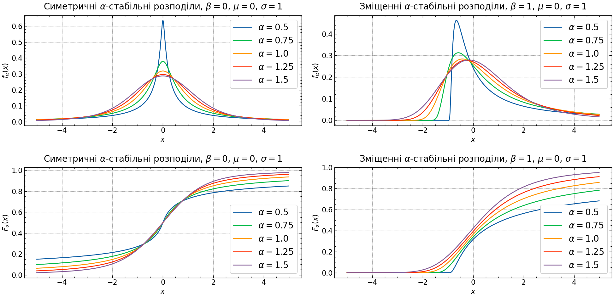
9.3.11 Задання ширини вікна та кроку
У даному блоці оберемо тип ряду для якого і виконуватимуться розрахунки. Перед нами представлено 6 варіантів представлення часового ряду. Виконуватимемо подальші обчислення для стандартизованих прибутковостей, оскільки згідно багатьом роботам було показано, що розподіл прибутковостей тих же самих фінансових активів (фондових індексів, валютних, криптовалют, тощо) виходить за межі нормального Гауссового розподілу. Покажемо це у даному ноутбуці та застосуємо альфа-стабільний розподіл Леві для кращого моделювання складних систем та передчасної ідентифікації кризових явищ.
window = 250 # ширина сковзного вікна
tstep = 1 # крок
ret_type = 4 # тип ряду: 1 - вихідний, 2 - детрендований (різниця між теперішнім значенням та попереднім)
# 3 - стандартизовані прибутковості, 4 - стандартизований ряд, 5 - абсолютні значення (волатильність)
# 6 - стандартизований вихідний ряд
length = len(time_ser)9.3.12 Розраховуємо параметри Леві, використовуючи алгоритм сковзного вікна
alpha = []
beta = []
mu = []
sigma = []for i in tqdm(range(0,length-window,tstep)):
fragm = time_ser.iloc[i:i+window].copy() # відбираємо фрагмент та в подальшому відбираємо потрібний тип ряду
if ret_type == 1:
pass
elif ret_type == 2:
fragm = fragm.diff()
elif ret_type == 3:
fragm = fragm.pct_change()
elif ret_type == 4:
fragm = fragm.pct_change()
fragm -= fragm.mean()
fragm /= fragm.std()
elif ret_type == 5:
fragm = fragm.pct_change()
fragm -= fragm.mean()
fragm /= fragm.std()
fragm = fragm.abs()
elif ret_type == 6:
fragm -= fragm.mean()
fragm /= fragm.std()
fragm = fragm.dropna().values
params = levy.fit_levy(fragm)
a, b, m, s = params[0].get('0')
alpha.append(a)
beta.append(b)
mu.append(m)
sigma.append(s)100%|██████████| 5995/5995 [24:13<00:00, 4.12it/s]9.3.13 Зберігаємо значення у текстовому документі
np.savetxt(f"alpha_idx_{symbol}_{window}_{tstep}_{ret_type}.txt", alpha)
np.savetxt(f"beta_idx_{symbol}_{window}_{tstep}_{ret_type}.txt", beta)
np.savetxt(f"mu_idx_{symbol}_{window}_{tstep}_{ret_type}.txt", mu)
np.savetxt(f"sigma_idx_{symbol}_{window}_{tstep}_{ret_type}.txt", sigma)9.3.14 Визначимо функцію для побудови парних графіків
def plot_pair(x_values,
y1_values,
y2_values,
y1_label,
y2_label,
x_label,
file_name, clr="magenta"):
fig, ax = plt.subplots()
ax2 = ax.twinx()
ax2.spines.right.set_position(("axes", 1.03))
p1, = ax.plot(x_values,
y1_values,
"b-", label=fr"{y1_label}")
p2, = ax2.plot(x_values,
y2_values,
color=clr,
label=y2_label)
ax.set_xlabel(x_label)
ax.set_ylabel(f"{y1_label}")
ax.yaxis.label.set_color(p1.get_color())
ax2.yaxis.label.set_color(p2.get_color())
tkw = dict(size=2, width=1.5)
ax.tick_params(axis='x', **tkw)
ax.tick_params(axis='y', colors=p1.get_color(), **tkw)
ax2.tick_params(axis='y', colors=p2.get_color(), **tkw)
ax2.legend(handles=[p1, p2])
plt.savefig(file_name + ".jpg")
plt.show();9.3.15 Виводимо динаміку показника стабільності \(\alpha\)
measure_label = r'$\alpha$'
file_name = f"alpha_idx_{symbol}_{window}_{tstep}_{ret_type}"plot_pair(time_ser.index[window:length:tstep],
time_ser.values[window:length:tstep],
alpha,
ylabel,
measure_label,
xlabel,
file_name)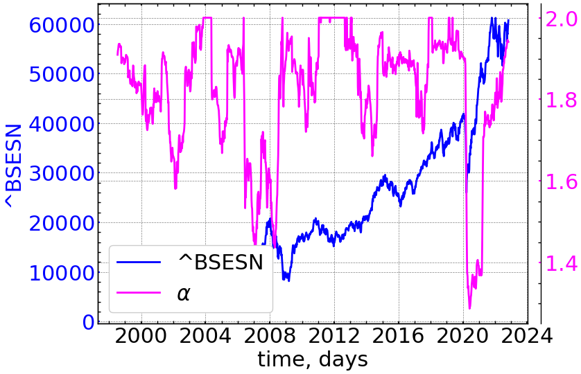
9.3.16 Виводимо динаміку індексу асиметрії \(\beta\)
measure_label = r'$\beta$'
file_name = f"beta_idx_{symbol}_{window}_{tstep}_{ret_type}"plot_pair(time_ser.index[window:length:tstep],
time_ser.values[window:length:tstep],
beta,
ylabel,
measure_label,
xlabel,
file_name)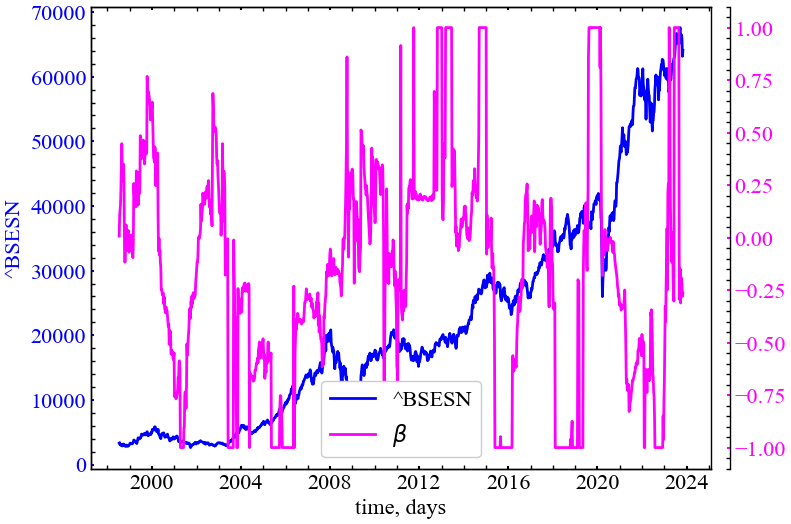
9.3.17 Виводимо динаміку параметру зміщення \(\mu\)
measure_label = r'$\mu$'
file_name = f"mu_idx_{symbol}_{window}_{tstep}_{ret_type}"plot_pair(time_ser.index[window:length:tstep],
time_ser.values[window:length:tstep],
mu,
ylabel,
measure_label,
xlabel,
file_name)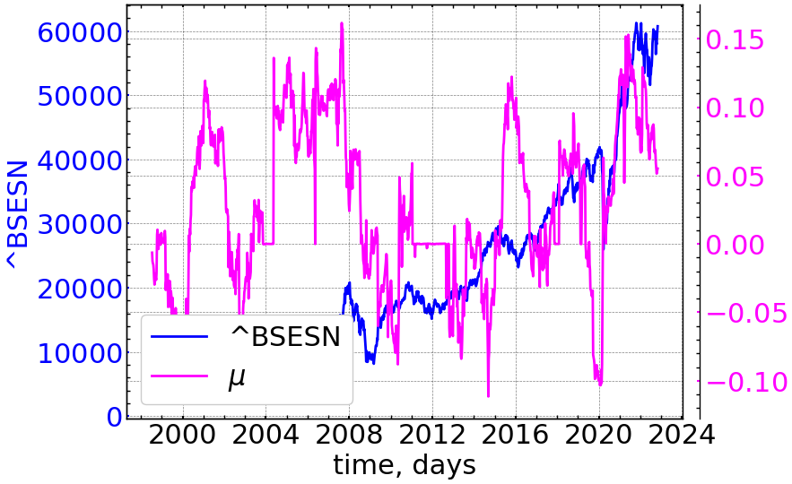
9.3.18 Виводимо динаміку параметра масштабу \(\sigma\)
measure_label = r'$\sigma$'
file_name = f"sigma_idx_{symbol}_{window}_{tstep}_{ret_type}"plot_pair(time_ser.index[window:length:tstep],
time_ser.values[window:length:tstep],
sigma,
ylabel,
measure_label,
xlabel,
file_name)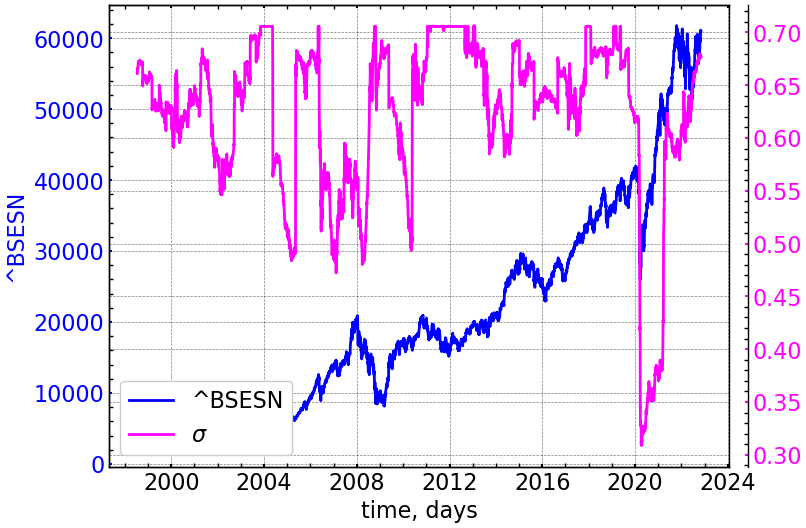
10 Висновок
Стабільні розподіли — захоплюючий і плідний об’єкт досліджень в теорії ймовірностей; більше того, в даний час вони мають велику цінність при моделюванні складних процесів у фізиці, астрономії, економіці, теорії комунікацій, тощо.
У даній роботі було представлено теоретичні та чисельні обгрунтування в сторону альфа-стабільного розподілу Леві в якості практичної моделі для кращого розуміння та передбачення кризових явищ у складних системах.
Тут ми представляємо розрахунки як для усього ряду, так і для його підфрагментів, використовуючи алгоритм сковзного вікна. Виходячи з усього ряду прибутковостей, видно, що хвости їх розподілу далеко виходять за межі Гауссового. Найкраще емпіричний розподіл прибутковостей збігається саме з теоретичним альфа-стабільним розподілом Леві.
Використовуючи алгоритм сковзного вікна, ми побачили, що параметри альфа-стабільного розподілу змінюються з часом.Виходячи з цього, можна сказати наступне:
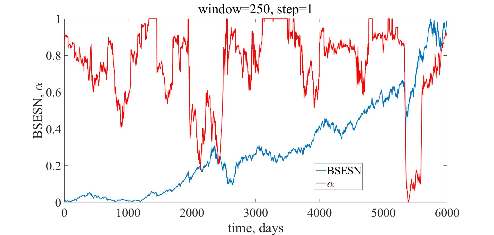
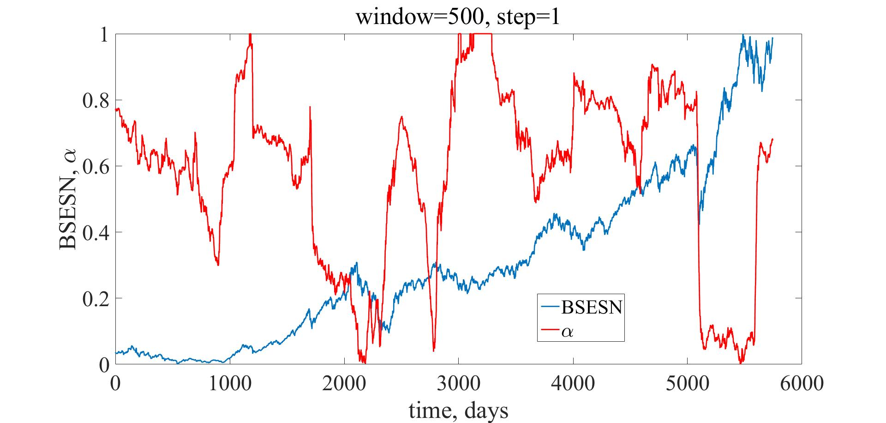
Параметр \(\alpha\) (індекс стабільності хвостів розподілу) для усіх вікон починає спадати у (перед)кризовий період, що робить його індикатором(-передвісником) кризових явищ. Під час криз у розподілі прибутковостей зростає ексцес, а самі хвости стають важчими, на що даний показник реагує передчасно. Видно, що даний показник поводить себе доволі стабільно для усіх вікон. Тим не менш, для вікна 500 днів він виглядає найбільш згладженим.
Наступним розглянемо параметр асиметрії \(\beta\):
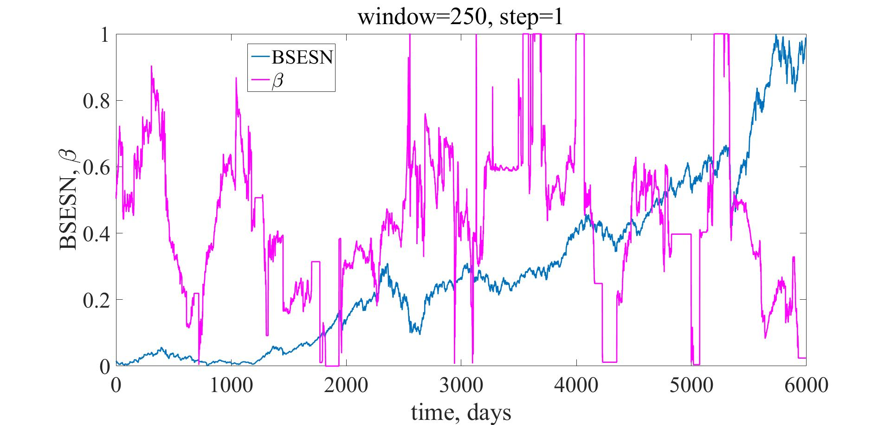
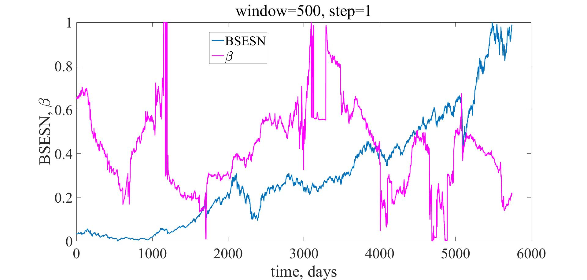
Динаміка даної міри виглядає набагато хаотичніше у порівнянні з індексом стабільності. Особливо це помітно для вікна довжиною 250 днів. Для представлених результатів можна зробити наступний висновок: у передкризовий період даний показник має зростати, вказуючи на значну правосторонню асиметрію розподілу прибутковостей (переважання позитивних прибутковостей). Для кризового періоду цей показник має спадати, вказуючи на домінацію негативних прибутковостей (лівостороння асиметрія розподілу). Даний показник важко розглядати у якості надійного індикатора, оскільки його коливання представляються значними навіть при незначних падіннях представленого фондового індексу.
Наступним розглянемо індекс розташування (зміщення) альфа-стабільного розподілу:
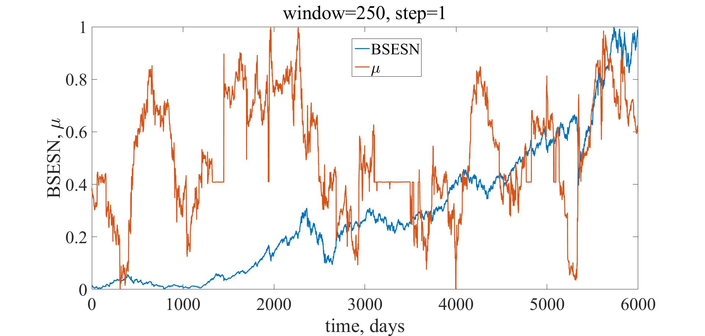
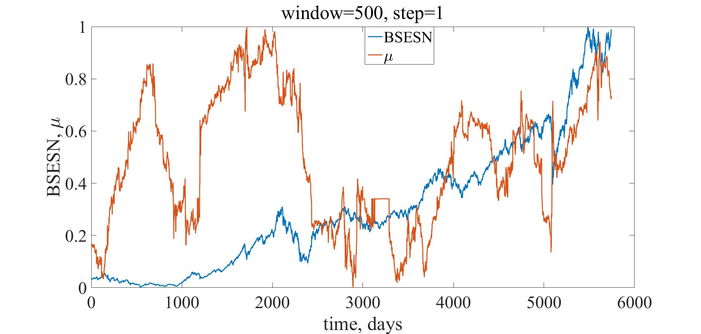
Показник розташування $ $ потроху спадає у кризовий період, демонструючи зміщення розподілу в сторону негативних прибутковостей. Тим не менш, цей розподіл представляєть настільки ж хаотичним як і показник асиметрії $ $.
Останні рисунки демонструють динаміку показника масштабування розподілу $ $:
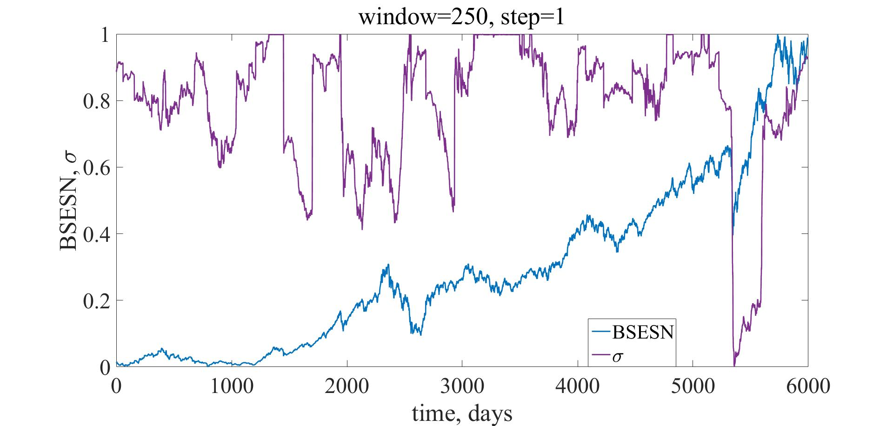
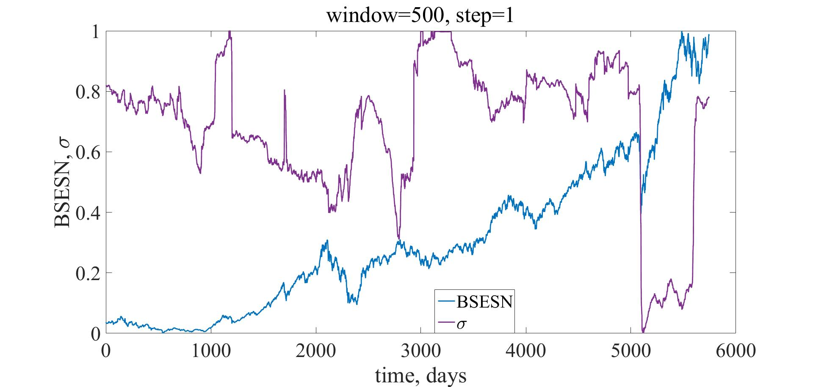
Із представлених результатів видно, що даний показник спадає у (перед)кризовий період, вказуючи на зменшення масштабу (форми) альфа-стабільного розподілу Леві. Накраще $ $ себе показує для вікна 250 днів. Для 500 днів показник стає занадто нечутливим до багатьох криз на фондовому ринку.
Отже, з усіх 4-ох показників показник стабільності $ $ є найкращим для ідентифікації кризових явищ та побудови надійних стратегій ризик-менеджменту.